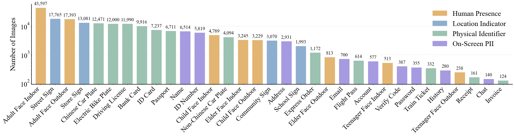

Existing datasets overlook critical leakage sources like on-screen PII or suffer from coarse categorization (e.g., just "person" or "text"). VPD-100K explicitly addresses these data gaps by covering the full spectrum of privacy risks in unconstrained, complex streaming environments.
🚀 Massive Scale & Quality
100,000 images with over 190,000 object instances. Over half of the dataset exceeds 1080p resolution to support tiny text recognition.
🔍 Fine-Grained Taxonomy
Annotated with 33 fine-grained classes across 4 primary domains: Human Presence (faces categorized by age and environment), On-Screen PII (passwords, chat logs, accounts), Physical Identifiers (passports, bank cards, tickets), and Location Indicators (street, store, and community signs).
🛡️ Ethical Scenario Reconstruction
Digital privacy risks (e.g., banking interfaces) are generated via simulated high-fidelity environments without compromising real user data.

Figure 3: Class frequency distribution sorted by frequency. A square root scale is applied to ensure visual readability, accounting for the inherent long-tail characteristic of such datasets.